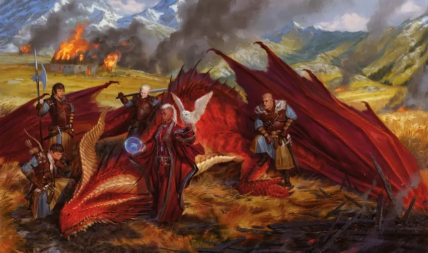
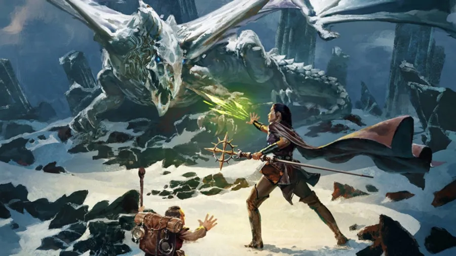
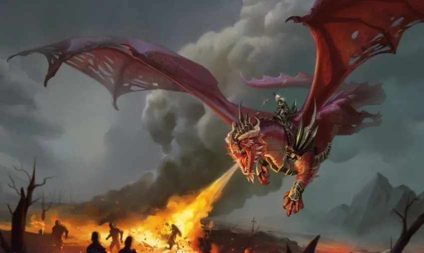

¿QUÉ ES ONE D&D?
El jueves 18 de agosto, Wizard of the Coast hizo un directo anunciando sus planes de futuro para la línea de Dungeons & Dragons y mucho más. Todo enfocado al año 2024, año en el que se cumplirán 50 años del juego, e iniciando un playtest con propuestas de cambios para el juego de rol. Todo bajo un nuevo nombre con el que pretenden unificar todo lo relacionado con Dungeons & Dragons: One D&D.
¿Pero, qué es One D&D?
One D&D es el nombre que la compañía de los magos de la costa pretende englobar las diferentes experiencia de juego, desde una revisión de las reglas actuales, iniciando un playtest en el que ya podemos descargar el PDF con los cambios propuestos y dar nuestras impresiones próximamente, de forma que la compañía tenga el feedback de los jugadores y así adaptar ciertas experiencias de juego a sus peticiones.
Estas propuestas de cambios en las reglas no crean una nueva versión del juego, sino más bien actualizan. No se sabe hasta dónde llegan los cambios en la base de sistema. El PDF al que se puede tener acceso público consta de modificaciones para la creación de personajes, dónde, por ejemplo, se da más peso al trasfondo que a la raza de personaje. Sin embargo también se vislumbran cambios en la magia con una división de acceso mágico diferente. Dónde antes sólo existía magia arcana o divina, ahora existe una tercera opción, la magia primordial. Veremos cómo afecta esto al sistema y a las clases de bardo y brujo que estaban en la frontera de un tipo de magia y otra.
Según se ha podido escuchar, al parecer no quieren hacer una sexta edición sino más bien una revisión. Quizás una edición 5.5 al igual que ocurrió con la tercera edición, quizás camuflada. Pero lo más importante de todo ello es que la nueva revisión de las reglas, por supuesto con una nueva trilogía de manuales básicos para el año 2024, serán compatibles con las actuales reglas. Es decir, todo el material publicado actualmente podrá usarse y disfrutarse sin tener que hacer modificaciones caseras.
Esto es muy positivo ya que uno de los grandes fallos que ha tenido Dungeons & Dragons con algunos entornos de campaña eran los saltos temporales, sobre todo el Reinos Olvidados, y cómo afectan los cambios de reglas de una edición a otra.
De este modo, parece que nos encontramos con una continuación con reglas revisadas que permitirá a la compañía seguir vendiendo el juego al ritmo actual y a los aficionados seguir utilizando el material ya comprado sin tener que adquirir el enésimo manual de monstruos con los mismos monstruos de siempre.
Wizard of the Coast también apuesta fuerte por el rol online, que si bien hasta ahora era algo más anecdótico, se han dado cuenta de su potencial (y una manera de llevarse al bolsillo lo que actualmente se están llevando otros). Para ello están creando versiones digitales en D&D Beyond y lo más destacado, una potentísima herramienta para las partidas online usando Unreal Engine, con el que se podrán usar herramientas de creación en 3D. Todavía en temprana fase de desarrollo y que no se espera una beta hasta 2023. Sin embargo, ya están abiertas las inscripciones para unirse a la fase de pruebas pública.
En cuanto a las novedades, a parte de una próxima campaña para Dragonlance llamada Shadow of the Dragon Queen, con la que se pretende retomar contacto con el mítico y esperado entorno de campaña que muchos veteranos conocemos, se han anunciado un montón de novedades incluyendo un juego de mesa de batallas compatible con la campaña de Dragonlance, un suplementos de Gigantes al estilo Fizbans Treasury of Dragons, material del elfo oscuro más conocido en todo el mundo, Dirzzt Do´Urden, y por encima de todo eso, una campaña ubicada en Planescape, otro de los entornos de campaña más esperado por los aficionados.